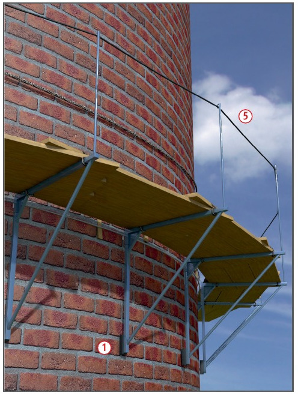
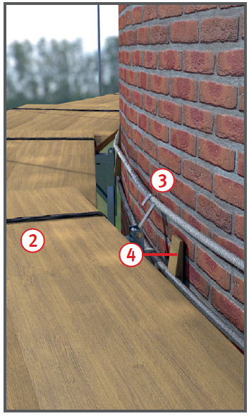

Gerüste für den Schornsteinbau |


Konsolgerüste
Trägergerüste
| 1 Zulässige Belastungen und erforderliche Drahtseildurchmesser bei Schornstein-Konsolgerüsten | ||||
| Schornsteinaußenumfang m | Drahtseildurchmesser bei Schornsteinen aus | Zulässige Verkehrslast des Konsolgerüstes kN |
||
| Mauerwerk mm min. | Stahlbeton mm min. | Stahlbeton mm min. | ||
| bis 6 | 10 | 10 | 10 | 6 |
| bis 15 | 10 | 12 | 12 | 10,5 |
| bis 25 | 12 | 14 | 14 | 15 |
| bis 44 | 14 | 16 | 18 | 18 |
| bis 63 | 14 | 18 | 20 | 18 |
| bis 78 | 16 | 20 | 22 | 18 |
| 2 Mindestabmessungen von Gerüstbrettern/-bohlen bei Arbeitsgerüsten | |||||||
| Lastklasse | gleichmäßig verteilte Last |
Brett- oder Bohlenbreite |
Brett- oder Bohlendicke cm | ||||
| 3,0 | 3,5 | 4,0 | 4,5 | 5,0 | |||
| kN/m2 | cm | zul. Stützweite in m | |||||
| 1 | 0,75 | 20 | 1,25 | 1,50 | 1,75 | 2,25 | 2,50 |
| 2 | 1,50 | ||||||
| 3 | 2,00 | 24 und 28 | 1,25 | 1,75 | 2,25 | 2,50 | 2,75 |
07/2021